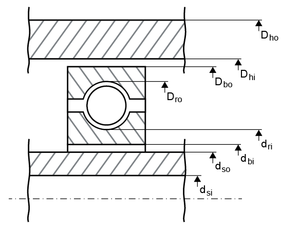
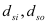
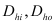
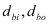
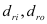
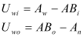
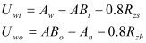
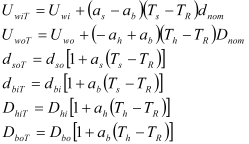
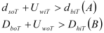

|
|
|


公差带
轴承游隙等级的定义尚未对轴承游隙给出明确说明，因为只为轴承游隙等级定义了一个数值范围。 和 选项定义该范围的上限和下限，而 是（径向）轴承游隙的 和 的算术平均值。
工作轴承游隙 使用所选的轴承游隙等级（例如 "C0"）、所选公差（例如 "平均值"）和工作条件（即转速和温度）来定义。对于每个滚动轴承，工作游隙的计算将在下文描述。从下一张图（参见图 25.8）开始，计算中引入以下变量：

图 25.8：用于计算轴承游隙的直径
- 轴的内径和外径。

- 轮毂的内径和外径。如果轴承是连接元件，则这些值代表外轴的内径和外径。为简单起见，此处术语 "箱体" 用于表示箱体或外轴（如果存在）。

- 轴承的内径和外径，以及内、外滚道的直径。


所有直径值均代表实际直径，即它们考虑了各零件的偏差。计算步骤如下：
- 滚道偏差取自相应的表（例如公差 "PN"），用于内圈 ΑΒi 和外圈 ΑΒo。
- 轴的偏差 Αw 和箱体的偏差 Αn 根据用户定义的数据（例如 "k6"）计算。您可以直接输入相应的偏差，也可以从列表框中选择公差带（列表包含最常见的公差带）。或者，您可以通过单击 "自定义输入"（例如 ‘k6’）手动输入公差带。
- 过盈量在内圈 Uwi 和外圈 Uwo 上计算。

- 根据 DIN 7190，过盈量减去数值 0.4*(RzA + RzB)。此时，RzA 和 RzB 是接触体的表面粗糙度（A：滚动轴承套圈，B：轴/轮毂）。假设滚动轴承套圈的粗糙度远小于轴/轮毂的粗糙度。因此，滚动轴承套圈的粗糙度不予考虑（RzA = 0）。

- 考虑温度的影响，

其中 αs、αh、αb 是轴、箱体和轴承的热膨胀系数，ΤsΤhΤR 是轴、箱体和参考温度，dnom、Dnom 是目录中定义的轴承公称直径。
- 如果条件 A 适用，则对内圈进行过盈配合计算；如果条件 B 适用，则对外圈进行过盈配合计算，同时考虑工作转速。

- 过盈配合中产生的压力会改变轴承套圈的工作直径，因此也会使公称轴承游隙产生 ΔPd 的变化。
注意
您在公差带中所做的选择对轴承的整体行为没有影响。
Tolerance field
The definition of the bearing clearance class does not yet provide a definitive statement about bearing clearance because only a range of values has been defined for the bearing clearance class. The and options define the upper and lower limits of the range, whereas the is the arithmetical average of the and for (radial) bearing clearance.
The Operating bearing clearance is defined using the selected bearing clearance class (e.g. "C0"), the selected tolerance (e.g. "mean value") and the working conditions, i.e. speed and temperature. For every rolling bearing, the calculation of operating clearance is described below. Starting from the next figure (see Figure 25.8), the following variables are introduced in the calculation:
Figure 25.8: Diameters used to calculate bearing clearance
- Internal and external diameter of the shaft.
- Internal and external diameter of the hub. If the bearing is a connecting element, then these values represent the internal and external diameter of the external shaft. For simplicity's sake, the term "housing" is used here to mean either the housing or the external shaft (if present).
- Internal and external diameter of the bearing, and for the diameter of the internal and external outer raceway.
All diameter values represent actual diameters, i.e. they take the allowance for each part into account. The calculation steps are as follows:
- The ring race allowance is taken from the corresponding table (e.g. for tolerance "PN"), for the inner ring ΑΒi and the outer ring ΑΒo.
- The allowance for the shaft, Αw, and housing, Αn, are calculated from the user-defined data (e.g. "k6"). You can either input the corresponding allowance directly or select the tolerance field from a selection list (the most commonly occurring tolerance fields are included in the list). Alternatively, you can input the tolerance field manually by clicking "Own input" (e.g. ‘k6’).
- The interference is calculated on the inner ring Uwi and on the outer ring Uwo.
- According to DIN 7190, the interference is reduced by the value 0.4*(RzA + RzB). In this case, RzA and RzB are the surface roughness of the contact bodies (A: rolling bearing ring, B: shaft/hub). It is assumed that the roughness of the rolling bearing rings is much less than the roughness of the shaft/hub. For this reason, the roughness of the rolling bearing rings is not taken into account (RzA = 0).
- The effect of temperature is taken into account,
where αs, αh, αb is the thermal expansion coefficient of the shaft, housing and bearing, ΤsΤhΤR are the shaft, housing and reference temperatures and dnom, Dnom is the nominal diameter of the bearing as defined in the catalog.
- An interference fit calculation is performed for the inner ring if condition A applies and for the outer ring if condition B applies, taking into account the operating speed as well.
- The pressure generated in the interference fit changes the operating diameter of the bearing races, and therefore also causes a change, ΔPd, to the nominal bearing clearance.
Note
The selection you make in the Tolerance field has no effect on the general behavior of the bearings.